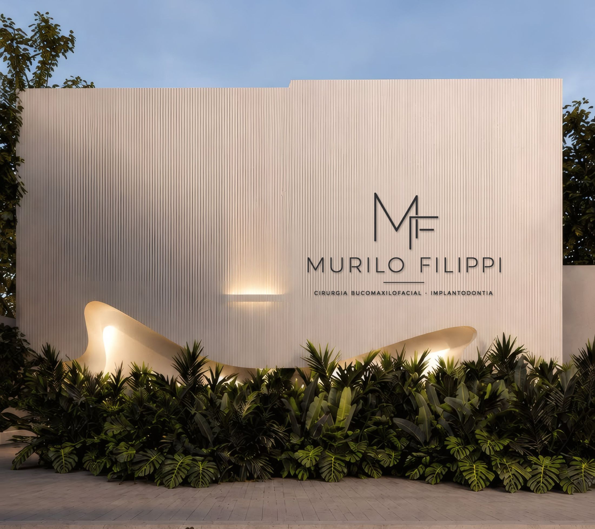
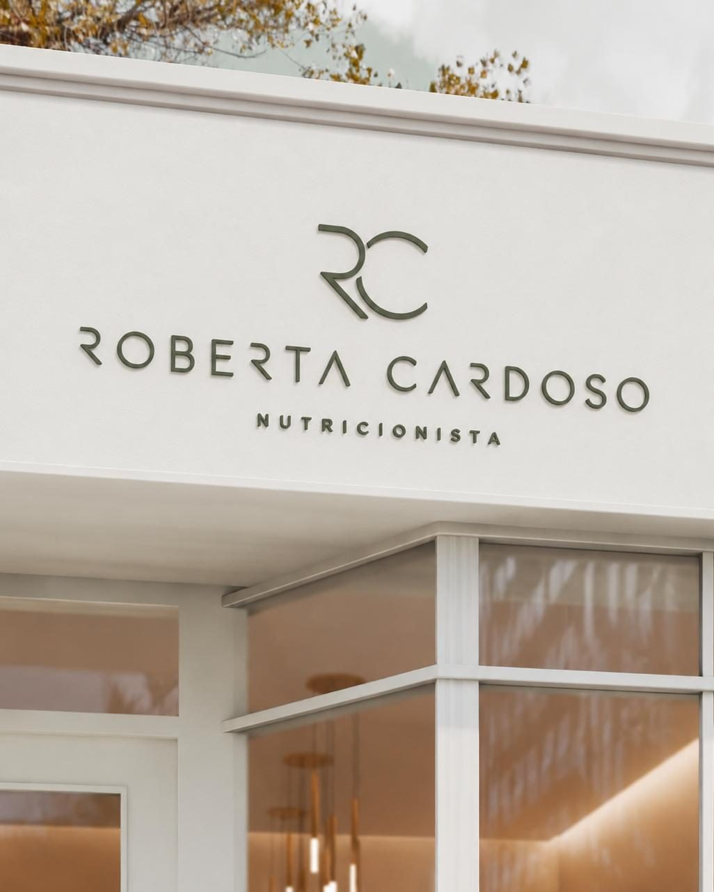
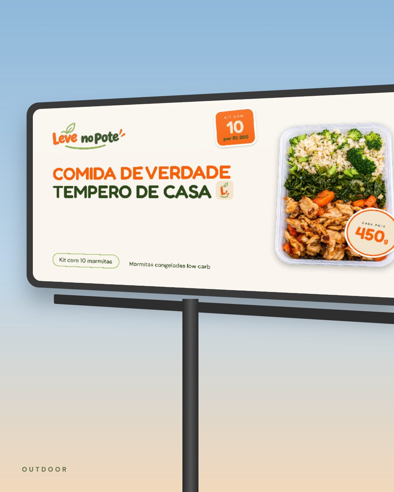
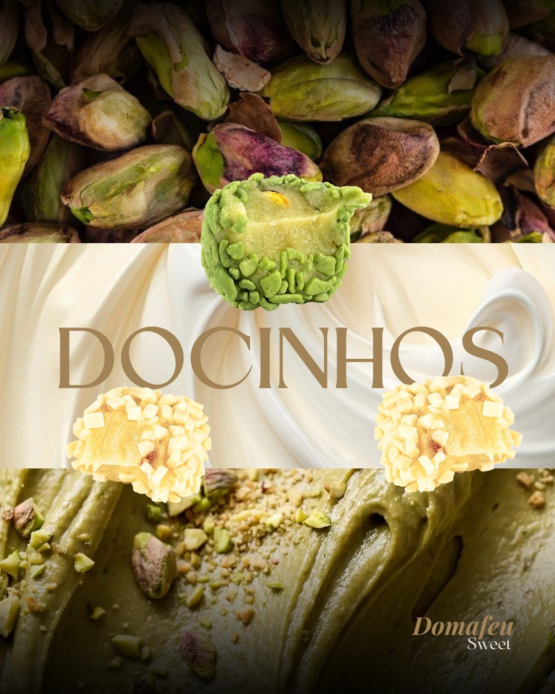
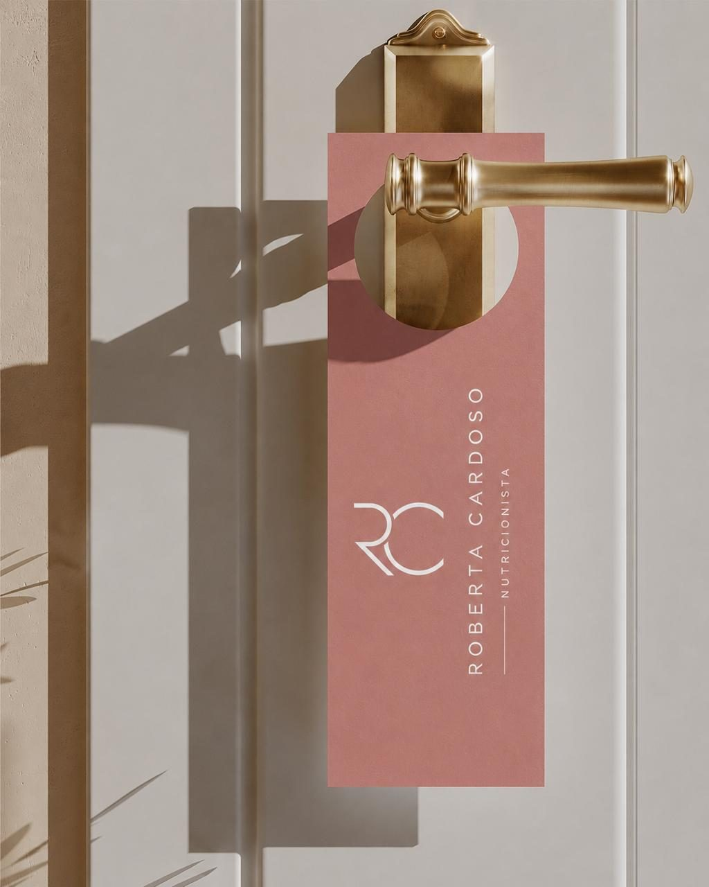
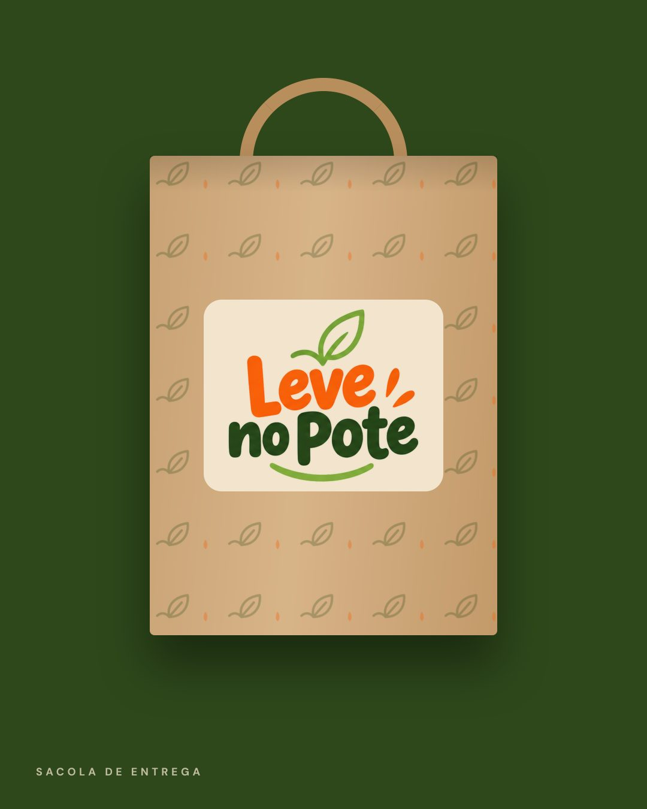
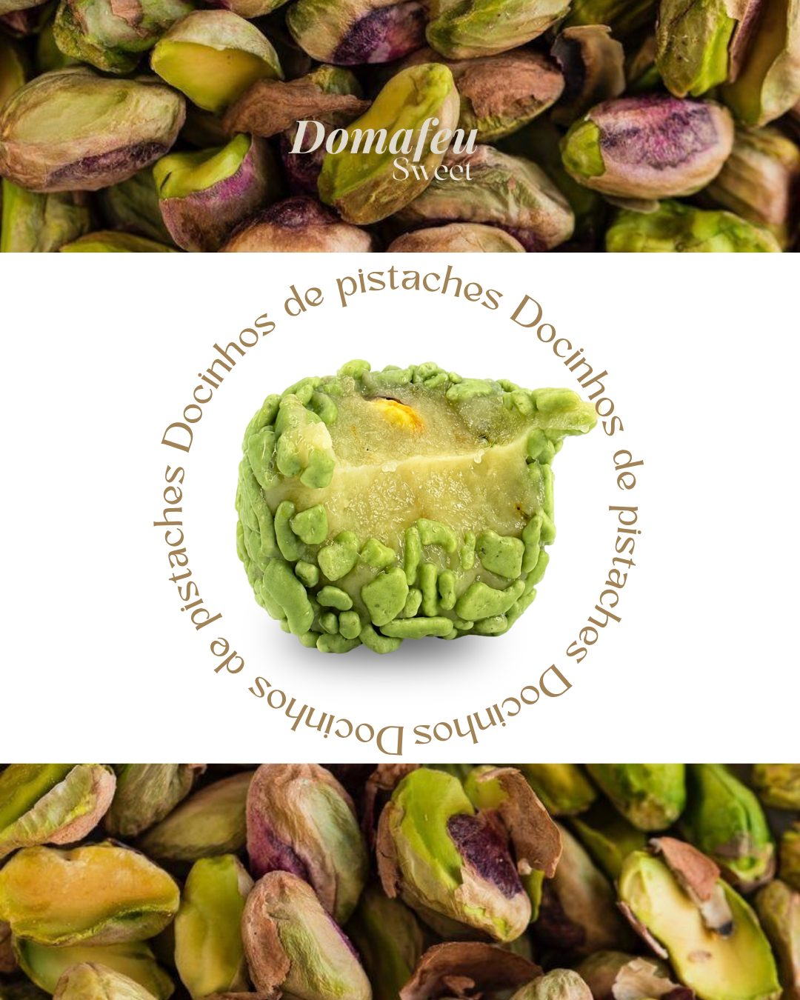

Simplificamos a comunicação.
VP · Agência de Marketing Digital
Estratégia, marca e conteúdo para quem faz um bom trabalho e quer ser percebido assim.
Role
Roberta Cardoso
Leve no Pote
Domafeu Sweet +A sua marcaMarcas que já passaram pela VP. Cada uma com estratégia e estética próprias, nascidas do diagnóstico e não de um molde.
Trabalhos '26
01 / 12
Placa de fachada
Murilo Filippi
Cases
Marcas que
saíram do genérico.
A marca no mundo
Identidade pronta
é a que funciona fora da tela.
Arraste para girar
O que fazemos
Do posicionamento
à execução.
Entendemos o negócio, definimos como ele quer ser percebido e transformamos isso em identidade, conteúdo e presença digital coerentes.
- 01
Estratégia e posicionamento
Diagnóstico, público, concorrência e a mensagem que a marca precisa sustentar.
- 02
Branding e rebranding
Plataforma de marca: propósito, personalidade, voz e o que diferencia você.
- 03
Identidade visual
Logo, paleta, tipografia, papelaria e as aplicações que fazem a marca ser lembrada.
- 04
Conteúdo e redes sociais
Linha editorial, feed, roteiros e calendário. Presença com constância e intenção.
- 05
Foto e vídeo
Direção de imagem, captação e edição com ritmo e acabamento limpo.
- 06
Sites e landing pages
Páginas sob medida, rápidas e pensadas para levar a pessoa até o contato.
- 07
Campanhas e tráfego pago
Anúncios com criativo, segmentação e acompanhamento de resultado.
- 08
Google Meu Negócio
Perfil completo e bem cuidado para quem procura você no mapa.
Método
Primeiro entender.
Depois criar.
Entender
O negócio, o público, o que já existe e o que precisa mudar.
Posicionar
Como a marca quer ser percebida e qual direção criativa sustenta isso.
Criar
Identidade, conteúdo, captação, edição e canais, tudo falando a mesma língua.
Revisar
Está claro? Está bonito? Está alinhado ao objetivo? Só sai quando as três respostas são sim.
Projeto completo
Virada de Marca
Do diagnóstico ao lançamento: estratégia, identidade, conteúdo, site e presença digital, entregues em etapas e organizados numa pasta só.
Quero a minha Virada de MarcaContato
Vamos simplificar
a sua comunicação?
Conte em poucas linhas o que você faz e onde sente que a comunicação ainda não mostra o seu trabalho. A gente responde pelo WhatsApp.